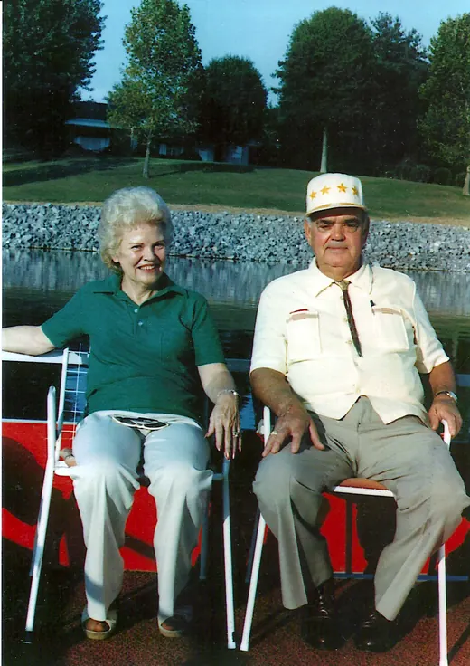

Our Family Story
Bunt and Helen King opened the doors in 1968. Their three children still run it.
The perfect location, more or less
The year was 1968. Bunt King, a father and businessman, came home and told his wife, Helen, that he had found the perfect location for a family restaurant: an old log building on Chapman Highway that had been an antique store.
In hindsight, he may have underestimated the hilly lot, the parking layout, and how much speeding traffic Chapman Highway would carry. Friends and extended family rallied behind the Kings anyway, and the log building became a steak house.
Not much has changed inside or out since. It is nothing pretentious, just a cozy rustic room with your favorite steak dinners and plenty of familiar faces among the crowd, the staff, and a few in the picture frames too.
Bunt passed in 1987. Helen ate, slept and breathed Ye Olde until she passed in 2003. Through rampant kudzu, an arson fire, and a global pandemic, the Kings still own and operate the restaurant.
As the family puts it: “Traditionally, our family, friends, and community have been the mortar between the logs.”

Who You’ll Find Here
- Nancy, Cheryl and DavidBunt and Helen’s three children, the second generation owners. They have worked at the steak house since day one.
- DavidCuts the meat by hand. In the family’s words, he “believes he has the best job in Knoxville.”
- Miss EthelMakes every cake and pie in-house, with her helpers.


The fire
The steak house was set on fire by a disgruntled employee. Looking back on it for the restaurant’s 50th anniversary, David King told WVLT: By the grace of God, we made it through it.
Kind Words Over the Years
- CityviewBest of the Best: Steakhouse, 2020, 2021, 2023, 2024 and 2025
- 2021Knoxville Stars, Best Steakhouse
- 2019Best Steaks, Who Rocks In Knox
- 2022Only In Your State: Must-Visit Steakhouse
- YahooOne of 10 Classic Steakhouses to Visit Soon
- Travel ChannelMan v. Food: Adam orders a 60 oz steak
- ESPN“Taste of the Town” with Todd Blackledge, who had the 20 oz strip
- PrintFeatured in Southern Living Magazine
- FootballOn the list of the 100 Best Things about Tennessee Football
- SmokiesAmong the 100 Best Secrets of the Great Smoky Mountains